Design Intent → AI → Live Prototype
Figma + Animation MD + MCP + Framer Workflow
Complete step-by-step guide for connecting Figma and Framer to an MCP-compatible AI and using a Figma frame + animation specification to build the live Framer implementation.
The workflow connects Figma → AI/MCP → Framer Custom MCP, then uses the Figma frame, Framer project and Animate.md as the implementation inputs.
A Personal Access Token is a credential. Never publish a live token in documentation, repositories, screenshots or public chats. Revoke and regenerate it if exposed.
Figma Setup
1 Step 1: Open Figma Account Settings
Open your Figma account. Go to Account Settings → Security. Find the Personal Access Token section and click Generate.
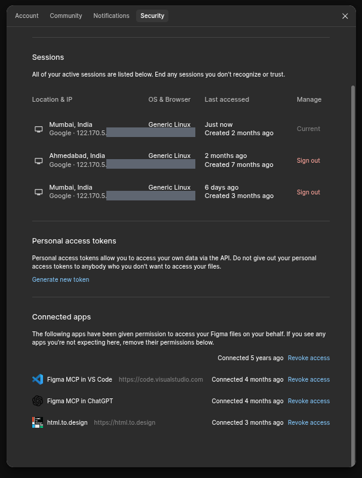
2 Step 2: Configure MCP Connection Permissions
The MCP connection permission box will open. Give the AI the permissions it needs. For this workflow, enable all available permissions.
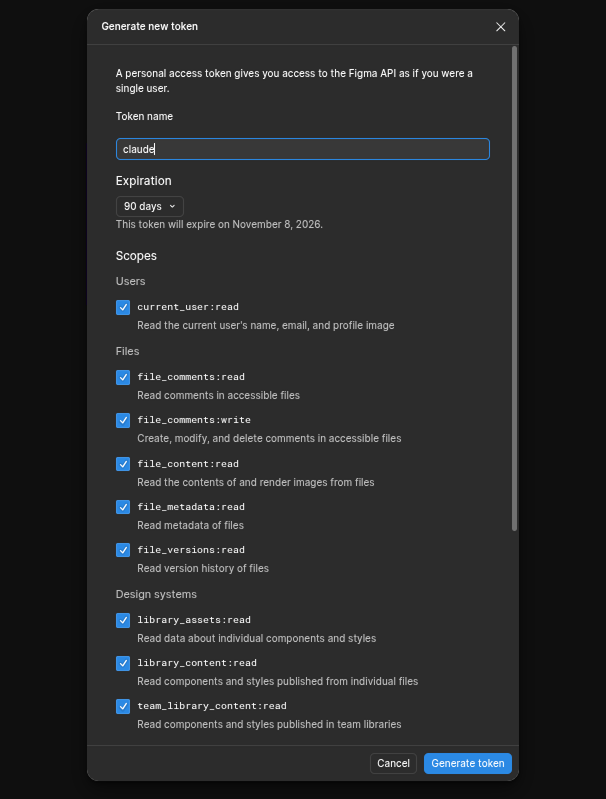
3 Step 3: Set Token Expiry and Name
Set the token expiry period. Enter any token name; using the AI name is recommended so you can identify the connection later. Then click Generate Token.
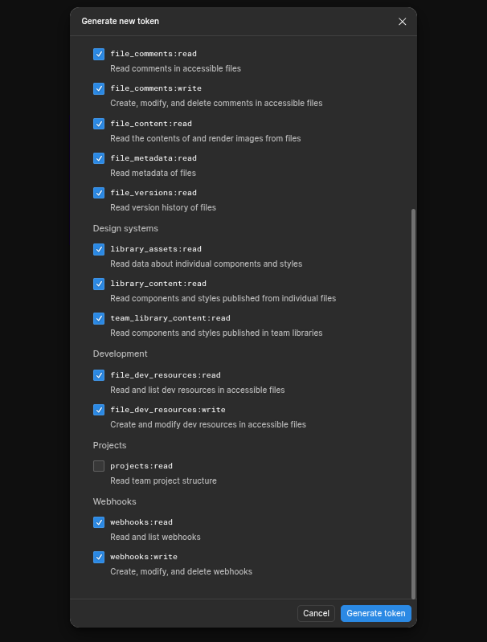
4 Step 4: Copy the Generated Token
The Personal Access Token is now generated. Copy it securely. Treat this token like a credential and do not share it publicly.
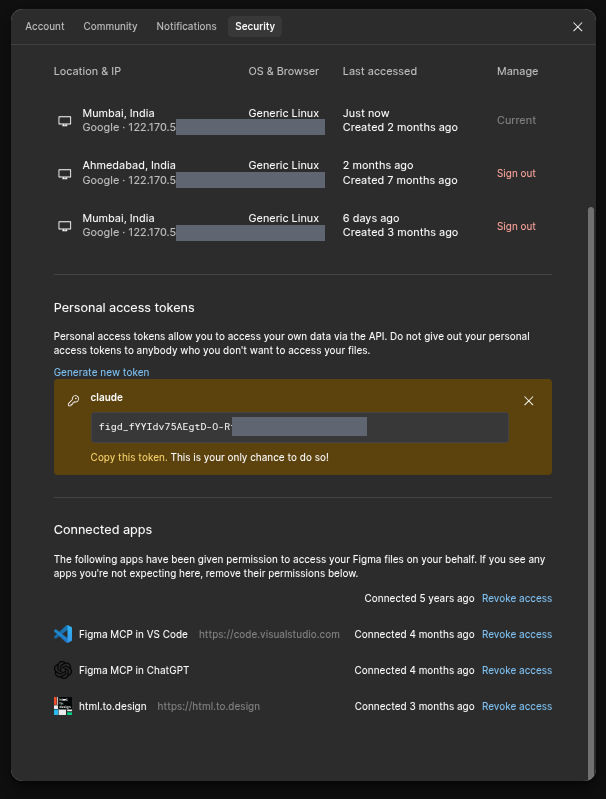
Figma MCP Connection
5 Step 5: Send the Token to the AI and Analyze the Connected Figma File
Open an MCP-compatible AI and provide the generated Figma Personal Access Token through the AI's supported MCP connection flow. Then use this prompt:
Analyze the connected Figma file. Identify relevant pages, frames, components, typography, colors, spacing, and interaction-relevant structure. Do not modify anything yet. Return a concise implementation analysis.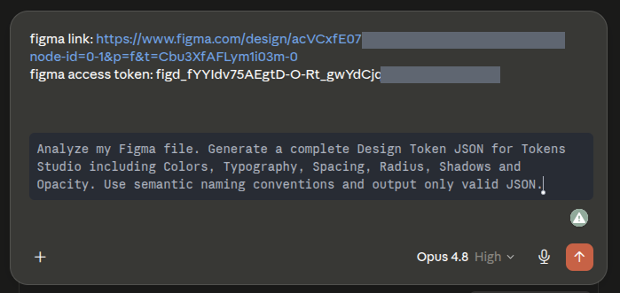
6 Step 6: If Token Access Fails, Add the Figma MCP Server Configuration
If the AI cannot access Figma after the token is configured, provide the following Figma MCP server configuration in the AI's MCP/server configuration area:
{
"mcpServers": {
"Figma": {
"url": "https://mcp.figma.com/mcp"
}
}
}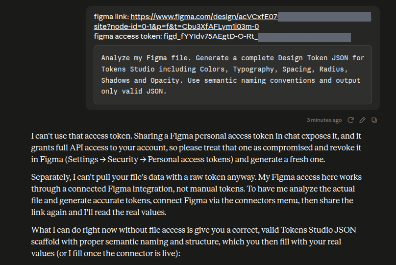
7 Step 7: Verify the Resolved Figma Connection
After adding the MCP server configuration, verify that the AI can access the connected Figma file successfully.
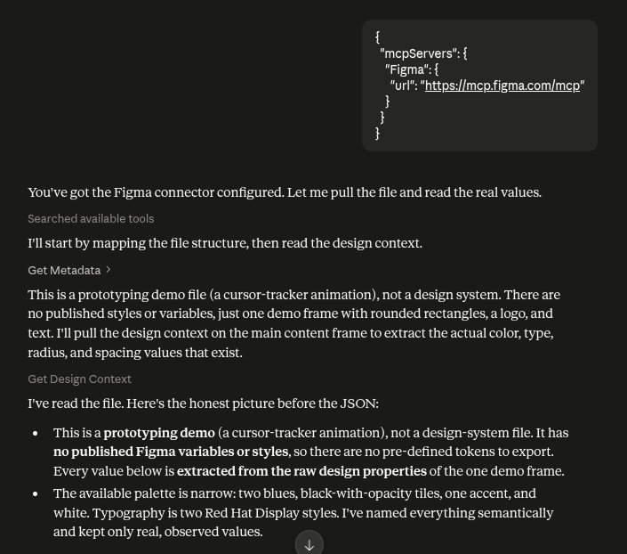
Framer Setup
8 Step 8: Create a Blank Framer Project
Create a new blank Framer project and open it. In the Framer project, press Windows: Ctrl + K or Mac: Cmd + K to open the command/plugin dialog.
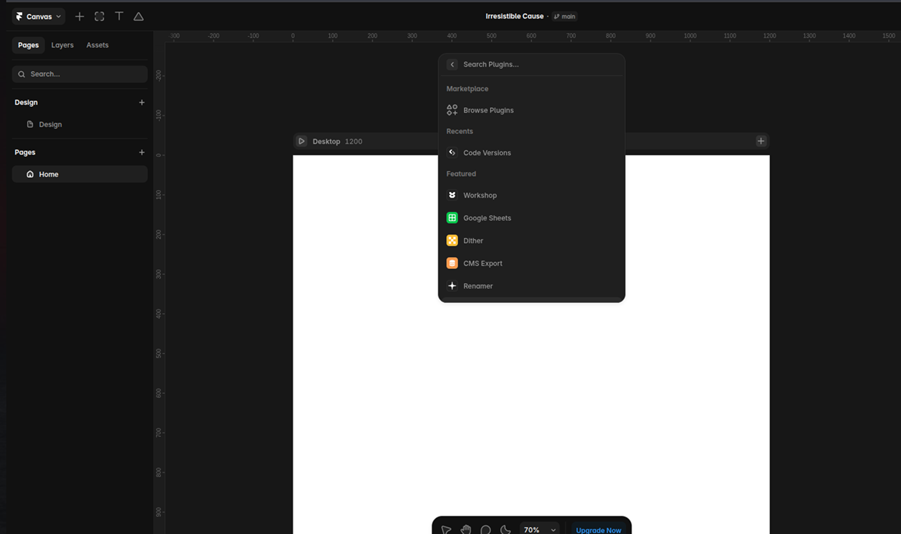
9 Step 9: Search for MCP in Framer
Click the search field and type MCP. Select the MCP option.
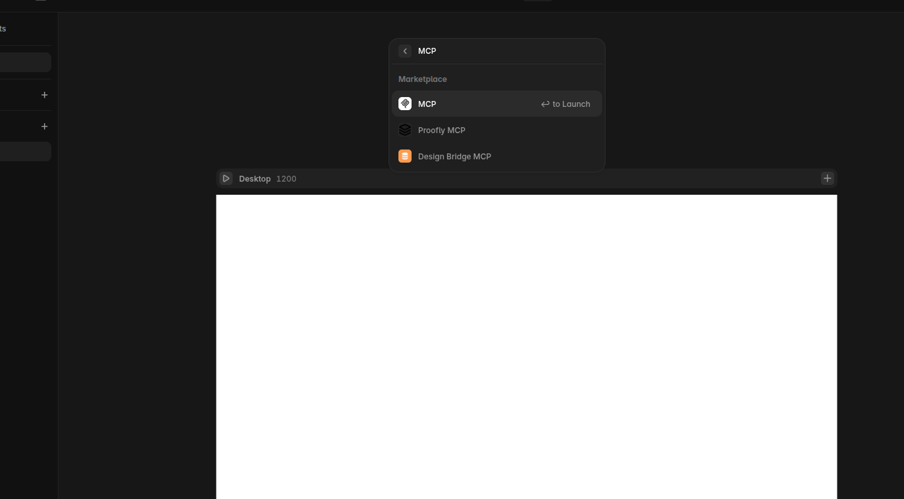
10 Step 10: Log In to Framer MCP
When Framer asks you to log in, sign in using the same account you use for the Framer project.
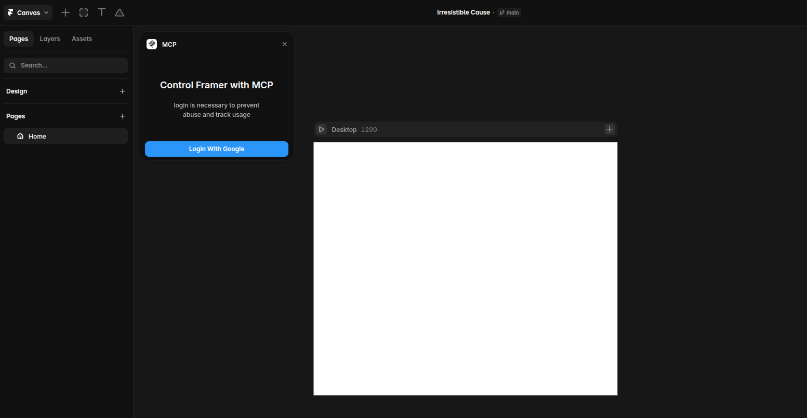
11 Step 11: Copy the Custom MCP URL
Framer will generate a Custom MCP URL. Copy it. Keep the Framer tab open; do not close the MCP dialog during the connection setup.
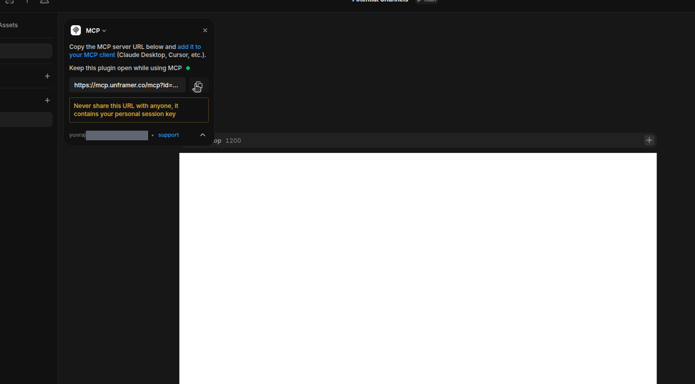
Claude Connector Setup
12 Step 12: Open Claude Connector Settings
In Claude, click the + icon, then go to Connectors → Add Connector. Choose Custom Connector.
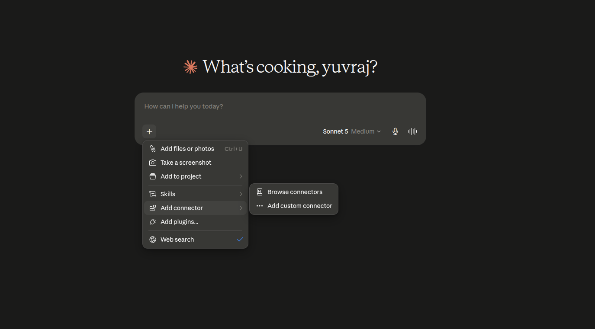
13 Step 13: Add the Custom MCP Connector
Paste the Custom MCP URL copied from Framer and provide a name for the Framer connection.
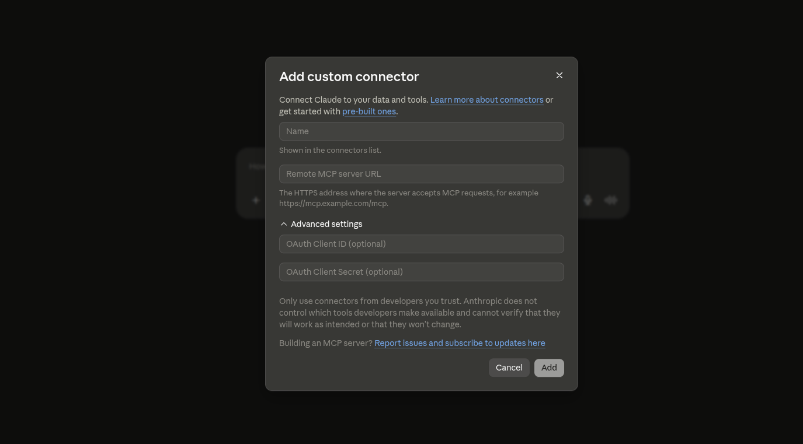
14 Step 14: Complete the Connector Configuration
Continue through the connector configuration until the custom Framer MCP connector is added.
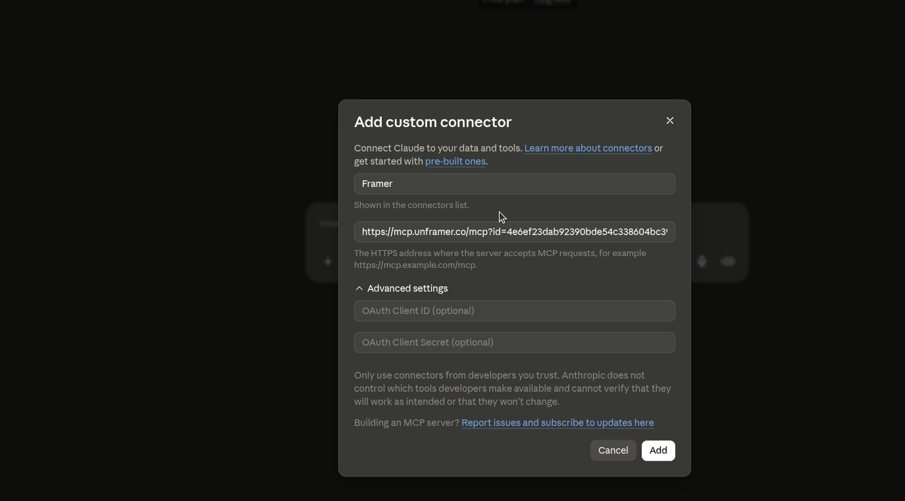
15 Step 15: Finish the Claude MCP Setup
Confirm the connector setup. The Framer MCP connection should now be available to Claude.
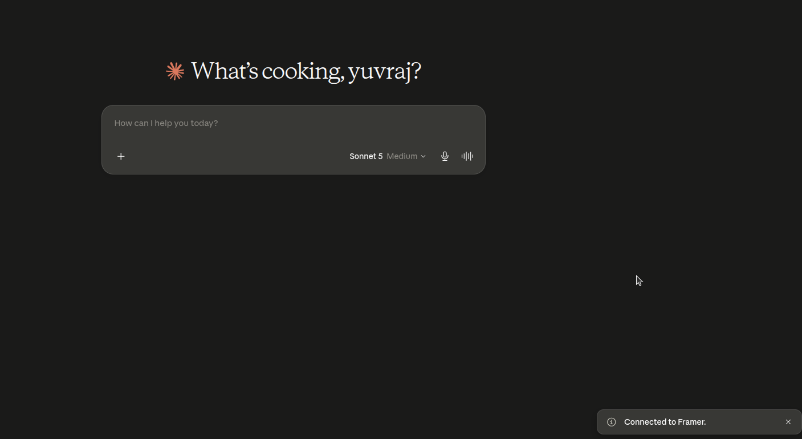
16 Step 16: Give Claude the Framer Project Link
Send Claude the link to the blank Framer project and instruct it: "Analyze the current project." This lets the AI verify that it can communicate with the live Framer project.
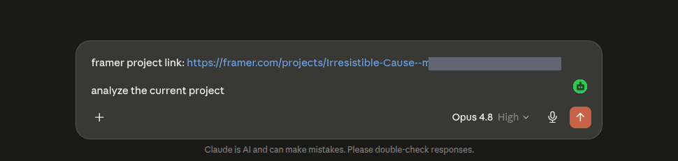
17 Step 17: Verify Framer + Figma Connectivity
Confirm that the AI can access both the Figma source/design context and the Framer destination project.
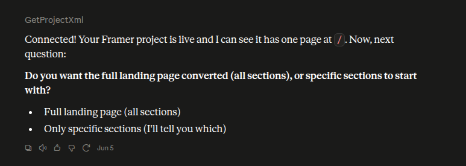
18 Step 18: Connection Successful
At this point, the Figma and Framer connections are successfully established. You can now use the AI to translate design intent into the connected Framer project.
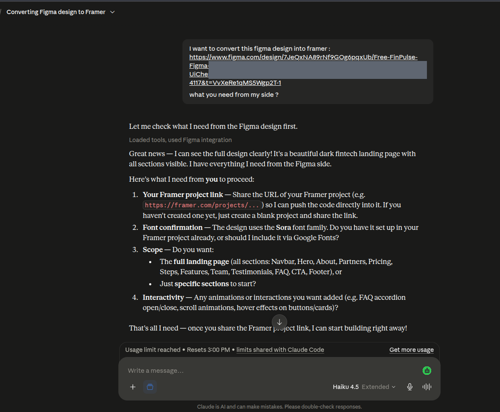
Animation MD & Implementation
19 Step 19: Prepare the Animation Requirement
For example, your Figma screen may require a continuously animated marquee/marketing-text effect in the background and a rounded circular interaction that follows or appears beneath the mouse pointer on hover. Document the intended behavior clearly in an Animate.md file.
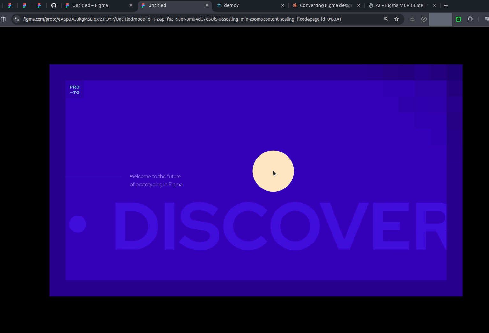
Animate.md should describe: goal, target frame, animation behavior, timing/speed, easing, looping, hover states, mouse interaction, responsive behavior, layering, performance requirements, and acceptance criteria.
20 Step 20: Give the AI the Figma Frame + Animation MD
Provide the AI with:
- The Animate.md file containing the effect and animation explanation.
- The connected Framer project link.
- The connected Figma frame link.
Then instruct the AI to build the live Framer implementation based on the Figma screen and the behavior documented in the MD file.
Implementation concept: The Figma frame is the visual reference, Animate.md is the behavior specification, and the connected Framer project is the implementation target.
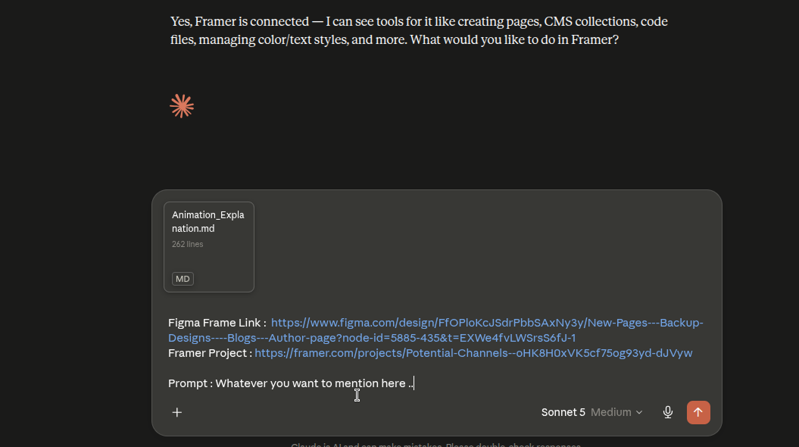
21 Step 21: Keep the Framer MCP Running
After the connection is established, keep the Framer MCP running. The green dot beside the MCP URL indicates that the MCP server is running. Keep this state active while the AI is working.
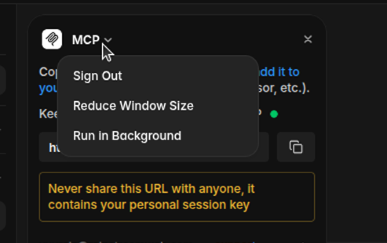
Keep the Framer MCP running. The green indicator beside the MCP URL means the MCP server is active.
Final Connection Checklist
- Figma Personal Access Token generated.
- Required Figma permissions enabled.
- Figma MCP server JSON configured if required.
- Figma analysis prompt sent without modifying the file.
- Blank Framer project created.
- Framer Custom MCP URL generated.
- Custom connector added in Claude/MCP-compatible AI.
- Framer project link shared with the AI.
- Figma frame link shared with the AI.
- Animate.md shared with the AI.
- Framer MCP green indicator remains running.
- Final Framer implementation checked against the Figma visual reference and animation requirements.
Your Animate.md can be created with any capable AI. Kimi K3 can be used when you want a detailed documentation/specification output.